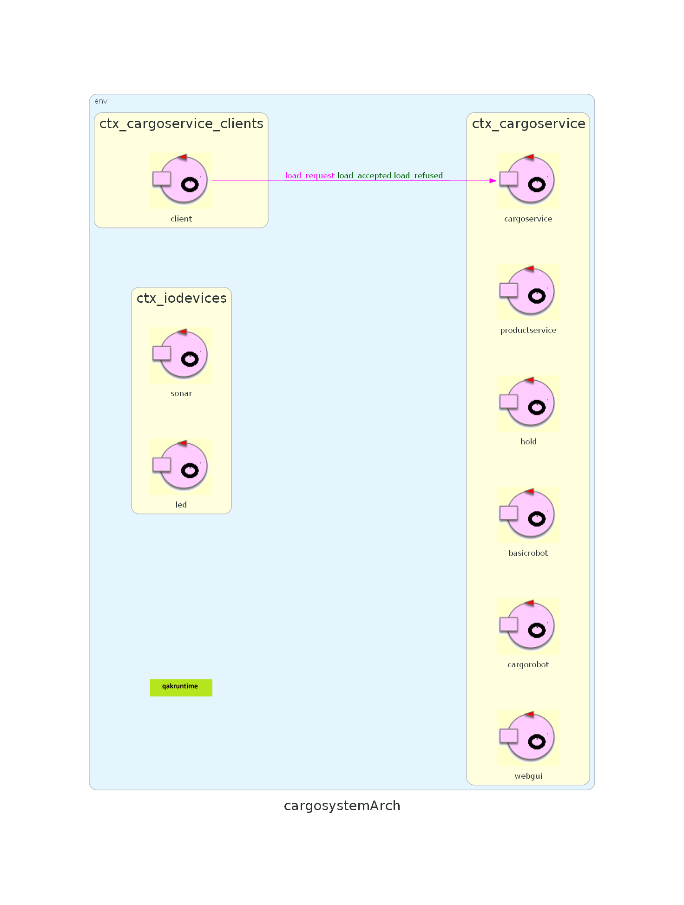

- base: variabile positiva di tipo intero
- altezza: variabile positiva di tipo intero
- base: variabile positiva di tipo intero
- altezza: variabile positiva di tipo intero
Inoltre, sarà installato un sensore davanti all’IOPort, basato su tecnologia sonar, utilizzato per rilevare la presenza di un product container. La segnalazione della presenza del container verrà effettuata quando sarà misurata una distanza D, tale che D < DFREE / 2, per un certo periodo di tempo (ad esempio 3 secondi).
 Il committente fornisce una realizzazione di un Differential Drive Robot, chiamato basicrobot. Con Differential Drive Robot si intende un robot a
guida differenziale, cioè un tipo di robot mobile che è in grado di muoversi grazie a due ruote motrici
indipendenti montate sullo stesso asse.
Il componente basicrobot viene visto dall’esterno come un servizio che realizza un insieme di funzionalità:
Il committente fornisce una realizzazione di un Differential Drive Robot, chiamato basicrobot. Con Differential Drive Robot si intende un robot a
guida differenziale, cioè un tipo di robot mobile che è in grado di muoversi grazie a due ruote motrici
indipendenti montate sullo stesso asse.
Il componente basicrobot viene visto dall’esterno come un servizio che realizza un insieme di funzionalità:
- Esecuzione di richieste di ingaggio: messaggio Request engage:engage(CALLER)
- Esecuzione di comandi elementari di movimento: messaggio Dispatch cmd:cmd(MOVE)
- Esecuzione di step (movimento in avanti per un tempo dato): messaggio Request step:step(TIME)
- Esecuzione di sequenze di movimento (piani): messaggio Request doplan:doplan(PATH,STEPTIME)
- Esecuzione di posizionamento: messaggio Request moverobot:moverobot(TARGETX, TARGETY)
- '1': denota una cella libera
- 'X': denota una cella occupata da un ostacolo
- 'r': denota la posizione corrente del robot
r, 1, 1, 1, 1, 1, 1, 1, 1, X, X, 1, 1, 1, 1, 1, 1, 1, X, 1, 1, 1, 1, X, X, 1, 1, 1, 1, 1, 1, 1, 1, 1, 1, X, X, X, X, X, X, X,
- 'H': denota la cella in cui si trova la Home
- 'SN': denota la cella dello Slot N
- 'UN': denota la cella in cui si trova l'area di scarico dello Slot N (Unload Position)
- 'IO': denota la cella in cui si trova l'IOPort
- 'L': denota la cella in cui robot preleverà il product container (Load Position)
H, 1, 1, 1, 1, 1, 1, r, U1, S1, S2, U2, 1, 1, 1, 1, 1, 1, X, 1, 1, 1, U3, S3, S4, U4, 1, 1, L, 1, 1, 1, 1, 1, 1, IO, X, X, X, X, X, X,
- Home: x=0, y=0
- Slot[0..3]: {(x=2, y=1), (x=3, y=1), (x=2, y=3), (x=3, y=3)}
- UnloadPos[0..3]: {(x=1, y=1), (x=4, y=1), (x=1, y=3), (x=4, y=3)}
- IOPort: x=0, y=5
- LoadPos: x=0, y=4
- productId: variabile intera relativa all'identificatore univoco del prodotto
- name: stringa relativa al nome del prodotto
- weight: variabile intera relativa al peso del prodotto
- Esecuzione di richieste di carico di product container: messaggio Request
load_request:load(PID).
Questa richiesta prevede due tipologie di risposte a seconda del suo
esito:
- Reply load_accepted : slot(SlotID): richiesta accettata con indicazione dell'id dello Slot associato al product container
- Reply load_refused : reason(String): richiesta rifiutata con motivazione del rifiuto
- Rilevazione della presenza del product container sull'IOPort tramite utilizzo di un sonar
- Posizionamento da parte del cargorobot del product container nello Slot a lui assegnato
- Visualizzazione dello stato interno della Hold tramite l'utilizzo di una web-gui dinamicamente aggiornata
- Interruzione di tutte le attività e accensione del led nel caso il sonar misuri una distanza D > DFREE per un periodo di tempo pari ad almeno tre secondi. Il servizio riprenderà le sue attività non appena il sonar misurerà una distanza D ≤ DFREE
- cargorobot dovrà ritornare sulla cella della Home
- cargoservice potrà gestire nuove load_request di product container
- Il peso del container presenta un valore tale per cui il peso totale della Hold (totalWeight) supera il peso massimo di essa (maxLoad)
- I 4 Slot nella Hold sono già occupati
Sistema logico di riferimento
Dai requisiti del committente sono emersi tre tipi di nodi computazionali diversi, che saranno rappresentati da tre contesti differenti:- cargoservice: relativo al core business del sistema, prevede al suo interno i seguenti
attori:
- cargoservice: si occuperà della gestione delle richieste di carico dei product container.
- productservice: si occuperà di fornire le funzionalità necessarie per la registrazione dei prodotti all'interno del database.
- basicrobot: si occuperà di fornire le funzionalità necessarie per muovere il robot all'interno della Hold.
- cargorobot: si occuperà di implementare le funzionalità aggiuntive necessarie per trasportare il product container allo Slot a lui assegnato. Questo attore sfrutterà le funzionalità basilari legate al movimento fornite dall'attore basicrobot.
- hold: si occuperà di fornire una rappresentazione della stiva, all'interno della quale verranno caricati i vari product container.
- webgui: si occuperà di fornire una visualizzazione lato client delle informazioni relative alla Hold.
- cargoservice_clients: client applicativo che interagisce con productservice tramite la Request load_request. Questo nodo risiede nella macchina dell'utente finale. Siccome sarà necesssaria la realizzazione di una sola funzionalità, questo contesto prevede un singolo attore, chiamato client.
- iodevices: si occupa dell'interfacciamento con i dispositivi fisici, come il sensore
sonar all'IOPort e l'accensione del LED. Questo nodo risiede nel dispositivo Raspberry. Questo contesto
prevede i seguenti attori:
- sonar: si occuperà di comunicare le misurazioni effettuate dal sensore sull'IOPort all'attore cargoservice.
- led: si occuperà dell'accessione e spegnimento del LED.
- productservice
- basicrobot
- sonar
- led
- cargoservice
- cargorobot
- hold
- webgui
- client

Testing
| ID | Titolo | Tipo | Descrizione | Input | Output |
|---|---|---|---|---|---|
| T01 | Univocità del PID | Unit Test | L'attore productservice si occupa di registrare un prodotto e di assegnargli un PID univoco | Prodotto | PID univoco |
| T02 | Salvataggio del prodotto | Unit Test | L'attore productservice si occupa di registrare correttamente il prodotto | Prodotto | Entry di Prodotto |
| T03 | Capacità massima | Integration Test | L'attore cargoservice si interfaccia con l'attore hold per controllare che la variabile totalWeight della Hold non superi il valore di maxLoad | PID container | Response: load_accepted o load_refused |
| T04 | Disponibilità di Slot | Integration Test | L'attore cargoservice, interagendo con l'attore hold, controlla che ci siano Slot disponibili | PID container | Response: load_accepted o load_refused |
| T05 | Gestione delle richieste di carico | Unit Test | L'attore cargoservice durante l'attesa che il product container venga consegnato all'IOPort non accetta richieste dall'esterno | PID container | Response: load_refused |
| T06 | Fallimento del sonar | Integration Test | Nel caso la distanza misurata dal sonar sia maggiore di DFREE per più di tre secondi, l'attore sonar dovrà interrompere il sistema, segnalando l'anomalia all'attore cargoservice, e comunicando all'attore led di accendere il LED. | D (> DFREE) | Interruzione dell'attività e accensione del LED da parte dell'attore led |
| T07 | Ripristino del sistema | Integration Test | Nel caso la distanza misurata dal sonar sia minore o uguale di DFREE, l'attore sonar dovrà comunicare all'attore cargoservice di ripristinare il sistema | D (<= DFREE) | Ripristino dell'attività |
| T08 | Corretto funzionamento sonar | Integration Test | L'attore sonar dovrà segnalare all'attore cargoservice l'arrivo di un container sull'IOPort in modo da poter avviare la procedura di carico | Product container sull'IOPort | Messaggio inviato all'attore cargoservice |
| T09 | Comunicazione dello Slot di scarico del container | Integration Test | L'attore cargoservice dovrà comunicare all'attore cargorobot l'identificativo dello Slot in cui il product container presente sull'IOPort dovrà essere scaricato. | Product container sull'IOPort | Identificativo dello Slot |
Piano di lavoro
Il piano di lavoro prevede l'implementazione degli attori legati al core-business, ovvero cargoservice,
hold e productservice. Lo Sprint 1 sarà incentrato sulla realizzazione dei primi due attori, in quanto il
terzo è già fornito dal committente. In questo modo sarà possibile proporre un'architettura eseguibile e
funzionante, procedendo in seguito allo sviluppo degli altri attori associati alle funzionalità secondarie.
In questo Sprint si prevede l'implementazione di un sottoinsieme mirato dei casi di test precedentemente
discussi, con lo scopo di validare il corretto funzionamento delle principali funzionalità del sistema. In
particolare,
verranno implementati i test relativi alla gestione dei prodotti, alla valutazione delle richieste di carico
e alla gestione dello
stato fisico della Hold, in quanto sono direttamente connessi agli attori da realizzare. I test
selezionati per questo Sprint sono:
- T01 - Univocità del PID
- T02 - Salvataggio del prodotto
- T03 - Capacità massima
- T04 - Disponibilità di slot
- T05 - Gestione delle richieste di carico